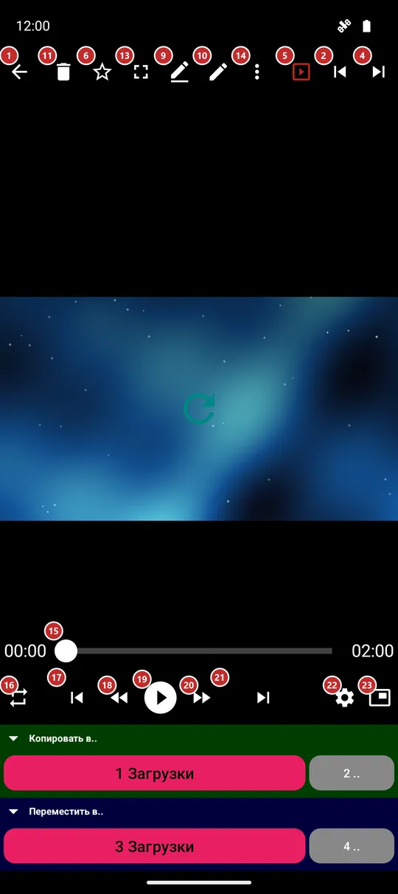
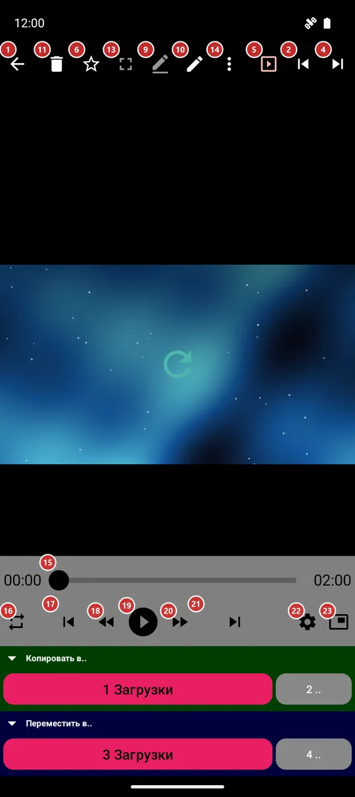

Плеер
Для чего этот экран
Плеер открывает файл из браузера файлов: воспроизводит видео или музыку, показывает фото, читает документ, книгу или текст. На этом же экране есть кнопки, чтобы перейти к другому файлу, разложить текущий по папкам и поделиться им.


Порядок действий
- Откройте файл в браузере файлов. Видео начинается на весь экран: нажмите на картинку, чтобы вернуть кнопки, а кнопкой «Во весь экран» 13 переключайтесь между одной картинкой и картинкой с панелью команд.
- «Воспроизвести / пауза» 19 запускает и останавливает воспроизведение; «Перемотать назад» 18 и «Перемотать вперёд» 20 прыгают на 10 секунд, а шкала 15 переносит в любой момент.
- «Предыдущий файл» 17 и «Следующий файл» 21 идут по папке в порядке браузера файлов; свайп влево или вправо по картинке делает то же. «Случайный переход» 3 прыгает на любой файл.
- «Порядок воспроизведения» 16 выбирает, что будет, когда файл закончится: повтор одного, цикл по списку, воспроизведение до конца или перемешивание.
- «Настройки воспроизведения» 22 - скорость, громкость, звуковая дорожка, субтитры и цвета.
- «Переименовать» 9, «Редактировать» 10, «Удалить» 11 и «Поделиться» 7 работают с текущим файлом, «Отменить» 12 возвращает удаление или перемещение, а «Избранное» 6 добавляет файл в избранное.
- «Ещё» 14 открывает меню со всем остальным для этого вида файла: сохранить кадр, повернуть, вывести на экран или перевести. «Картинка в картинке» 23 сворачивает видео в маленькое окно, а пункт «Справка» в меню или клавиша F1 открывает эту страницу.
Элементы
Панель команд
1НазадЗакрывает плеер и возвращает к списку файлов.
Кнопка «Назад» устройства делает то же самое. Нажатие в левом верхнем углу картинки тоже.
2ПредыдущийПереходит к предыдущему файлу папки.
Порядок такой же, как в браузере файлов. Удалённый или перемещённый файл уже исчез из списка, так что на него вы не попадёте.
3Случайный переходПрыгает на случайный файл папки.
Удобно для перемешанного прослушивания или чтобы глянуть то, о чём вы забыли.
4СледующийПереходит к следующему файлу папки.
Порядок такой же, как в браузере файлов. Свайп влево по фото или видео делает то же самое.
5Слайд-шоуЗапускает и останавливает показ.
В режиме показа плеер сам переходит к следующему файлу. Темп и оформление настраиваются в настройках, на вкладке «Медиа».
6ИзбранноеДобавляет файл в избранное или убирает его оттуда.
Всё отмеченное собирается в «Избранном» в списке ресурсов.
8Информация о файлеПоказывает, что приложение знает о файле.
Размер, полный путь и, где это применимо, разрешение или параметры съёмки.
9ПереименоватьПереименовывает текущий файл.
Диалог спросит новое имя.
10РедактироватьОткрывает инструменты редактирования текущего файла.
Что откроется, зависит от вида файла: настройки воспроизведения для видео и музыки, окно редактирования для фото, GIF или PDF.
11УдалитьУдаляет текущий файл после подтверждения.
Удалённый файл сразу пропадает из списка.
- Отмена
- «Отменить» возвращает файл, пока приложение ещё помнит операцию.
12ОтменитьВозвращает последнее удаление или перемещение.
Кнопка появляется сразу после такой операции.
13Во весь экранСкрывает панель команд, чтобы осталась только картинка.
Чтобы вернуть панель, нажмите на картинку или на кнопку «Выйти из полноэкранного режима» в углу. Если повернуть телефон набок, плеер сам уйдёт на весь экран, а если вернуть вертикально, панель вернётся. Видео при этом продолжает играть.
14ЕщёОткрывает меню с остальными действиями.
Кнопки, которые не поместились, переезжают сюда, так что ничего не пропадает. Меню зависит от вида файла: сохранить кадр видео, повернуть или обрезать фото, поиск, перевод и извлечение текста в документе или книге, текст песни и таймер сна для музыки, вывод на экран, печать и «Отправить в..». Клавиша F1 открывает эту страницу; пункт «Справка» в этом меню - тоже.
Выбор файла: G открывает Миниатюры, F4 - Список файлов, N - Перейти к файлу. Нумерация начинается с 1. Эти же действия есть в меню с тремя точками. Если коллекции нет, окно объясняет недоступность переходов.
Клавиши видео: точка вызывает Следующий кадр. Предыдущий кадр недоступен с объяснением, если декодер не поддерживает шаг назад. Shift+L задаёт A, затем B, затем отключает повтор; B должна быть после A. Границы показаны до отмены, смены файла или остановки окна. Эти действия доступны и в меню.
Клавиши слайд-шоу: S запускает показ. Повторное S сокращает текущий интервал вдвое, но не ниже 1 секунды; I запускает случайный порядок или переключает на него. Это работает и в отдельном плеере, если в папке несколько файлов. Одиночное окно объясняет ограничение.
Воспроизведение
15Шкала времениПоказывает, как далеко продвинулся файл, и позволяет перейти в любой момент.
Потяните ползунок или нажмите на шкалу. С двух сторон от неё стоят время воспроизведения и длина файла.
16Порядок воспроизведенияВыбирает, что будет, когда файл закончится.
«Повторять один» играет тот же файл снова и снова. «По кругу» после последнего файла возвращается к первому. «До конца» останавливается после последнего файла. Последний вариант играет файлы в случайном порядке.
17Предыдущий файлПереходит к предыдущему файлу папки.
То же, что «Предыдущий» на панели команд, но ближе к большому пальцу.
18Перемотать назад на 10 секундПрыгает на 10 секунд назад.
Нажмите несколько раз, чтобы вернуться ещё дальше.
19Воспроизвести / паузаЗапускает и ставит на паузу воспроизведение.
Для анимированной картинки, например GIF, запускает и останавливает анимацию. Плеер помнит, как далеко вы досмотрели, поэтому тот же файл продолжится оттуда в следующий раз.
20Перемотать вперёд на 10 секундПрыгает на 10 секунд вперёд.
Нажмите несколько раз, чтобы пропустить длинную заставку.
21Следующий файлПереходит к следующему файлу папки.
То же, что «Следующий» на панели команд, но ближе к большому пальцу.
22Настройки воспроизведенияОткрывает окно настроек воспроизведения.
Скорость, включая очень медленные 0,1x и 0,3x, громкость, яркость, звуковая дорожка, субтитры и цвета. В портретной ориентации ползунки стоят вертикально, так что большой палец двигает их снизу вверх.
23Картинка в картинкеСворачивает видео в маленькое окно поверх других приложений.
Кнопка есть у видео, если устройство это поддерживает.